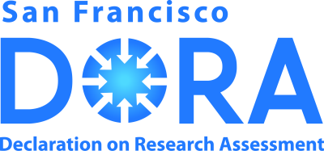
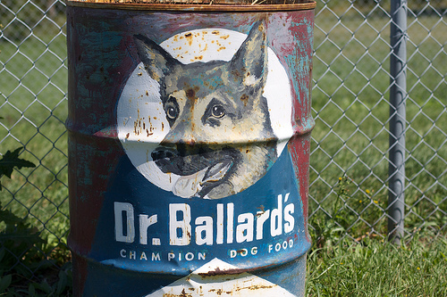

- The most other scientists see of your research is the paper at the end
- Yet even this is not accessible to many scientists or the public
- More than just access to the published results
- Data?
- Methods?
- Code?
- Statistics?
- Hypotheses?
November 5, 2014
Open Science
Open Access
- Who owns copyright on the average paper in a standard journal?
Open Access
- Almost certainly not the authors!
- Rights transferred to publisher
- OA is about retaining your rights & maximizing access to research outputs
Open Access
© Piled Higher & Deeper Publishing LLC — CC BY
Models
- Two main models
- Gold
- Green
Gold OA
- Publish in an OA journal
- Immediate & open access to published version
- Often authors incur an APC
- But majority of OA journals charge no APCs
Green OA
- Self-archiving
- Upon being accepted, deposit authors version in a repository
- Institutional
- Domain specific
- Usually, journals impose an embargo period
- Important to check what journals allow you to do
- after all you've signed away copyright!
Hybrid Journals
- Another type of publishing model
- Allows OA within otherwise closed journal
- Involves payment of APCs
- Allows traditional venues for papers…
- …but supports big STEM publishers
Licences
- Open Access is largely a copyright issue
- Author owns the copyright on their works — "awarded" at point of creation
- Right up to the point the author signs it over
- What others can & can't do with your works depends on licence terms
Creative Commons
- Creative Commons or CC licences are very common in OA publishing
- BY — By attribution
- SA — Share-alike
- NC — Non-commercial
- ND — No derivatives
CC-BY
- The most permissive of the CC copyright licenses
- Anyone can reuse a work, do anything with it, so long as they attribute the original source
Berlin declaration
"…a free, irrevocable, worldwide, right of access to, and a license to copy, use, distribute, transmit and display the work publicly and to make and distribute derivative works, in any digital medium for any responsible purpose, subject to proper attribution of authorship…"
Berlin Declaration on Open Access to Knowledge in the Sciences and Humanities
CC-BY-SA
- This adds a share-alike clause to the licence
- viral
- Derived works must also be licensed under

CC-BY-ND
- Adds a no-derivatives clause to CC-BY
- Prevents remixing, combining etc of your work

CC-BY-NC
- Adds a non-commercial clause to CC-BY
- But what is NC?
"Any use, that is primarily directed toward commercial advantage or private monetary compensation" Paul Kimpel

CC-BY-NC-SA & CC-BY-NC-ND
- CC-BY-NC-SA — Combines the NC and SA clauses
- CC-BY-NC-ND — Combines the NC and ND clauses

APCs
- Article Processing Charges
- What you pay to the publisher to cover their costs of publishing & making available your manuscript
- What you pay varies widely
- Majority of OA don't charge any APCs
From the free (beer)…
- Many Gold OA journals do not charge APCs
…to the sublime…
- The PeerJ has an author subscription model
- $99 / $199 / $299 1-off fee
- 1 / 2 / unlimited pubs in journal
- All authors on a paper need a subscription
…to the ridiculous
- American Chemical Society OA APCs
- Additional $1000 for CC licences
…yet more silliness, this time from AAAS
…yet more silliness, this time from AAAS
- APC of $3000 (CC-BY-NC) or $4000 (CC-BY)
- Online online journal but discourages properly documenting research
- $1500 surcharge for > 15 pages!
- 115 like-minded people wrote a letter denouncing the AAAS over Science Advances
- Tennant et al Open Letter to AAAS. The Winnower 1:e140813.35294 (2014)
Nature Publishing Group get in on the act…
- Nature Communications was a hybrid OA – subscription-based, online-only journal
- Papers published "…represent important advances of significance to specialists within each field"
- Recently went Open Access only http://doi.org/10.1038/ncomms6523
- APC a staggering $5200 + taxes
- Default licence is CC-BY (but allows CC-BY-NC-ND or CC-BY-NC-SA)
- Paying (in part) to support the 30+ staff NPG employ to run the journal
Rise of the mega journals
- New journals like PLOS One, Scientific Reports
- Lower APCs that traditional publishers
- APC of $1350
- PLOS One will also waive fees if no funding source
- Mega journals often have different review criteria; work required to only be technically sound
Preprint servers
- Preprint servers allow rapid dissemination of your work before peer review
- Very popular in mathematics, physics, statistics; arXiv.org
- Biological communities well-served now by
- Check your intended journal accepts papers that have preprints — some don't but most now do, including Nature etc.
Open Access at U of R
- Library has an Open Access team to assist you
- Web pages have a lot of useful information
- Authors Fund — can apply to the fund for costs associated with APCs
- Only for fully-OA journals (not hybrids)
- Must deposit copy of work in oURspace, the U of R's institutional repository
- Work must not be embargoed
Tri-council Open Access policies
- CIHR has an Open Access policy
- All research papers from CIHR-funded work must be available freely from the publisher or other online repository within 12 months of publication
- NSERC, SSHRC proposed draft policy in fall 2013 to bring them in to line with CIHR
- Summary of consultation on draft policy now available; a decision should come this fall
- Open Access is coming whether you like it or not!
Open Access "sting"
- Science (October 2013) published a news piece by John Bohannon
- "Dozens of open-access journals targetted in an elaborate Science sting accepted a spoof research article, raising questions about peer-review practices in much of the open-access world"
- Beal's list of predatory publishers
- Spam emails
- Grammatical errors or typos
- Editorial boards …
- Be careful who you publish with
- Consult with Librarian or peers

- Not restricted to Open Access
Fake peer reviews
Publisher discovers 50 manuscripts involving fake peer reviews…
Open Data
- Data is the life blood of science
- Impossible to reproduce or check results without access to data
- Hogging data promotes duplication of effort
Data journals
- Rise of a new breed of journal, e.g.
- Scientific Data
- Geoscience Data Journal
- Focus on papers that describe data
- Descriptions and meta data
Data journals
Data Repositories
- Not enough to just describe data
- Data journals also mandate that data be deposited in approved repositories
- Data deposits don't need to be tied to a (data) paper
- Examples
- Dryad
- figShare
Data licenses
- Common to place data in public domain
- Can be done via another CC "licence"
- CC Zero

Open Code
- Even in less-technical subjects, computers pervade the scientific endeavour
- How to check that you didn't make a mistake
- coding data?
- data processing?
- applying a statistical analysis?
- Can we truly trust results of research without access to the codes?
How to be open with code?
- Use open source software
- Use scripts to document data processing/analysis steps
- Use permissive licences (GPL, MIT, BSD, Apache)
- Release your code in convenient form
- Use version control (e.g. github)
Reproducibility
- Much of Open Science is about reproducibility and trust
- Reproducibility is the essence of science
- Amgen tried to replicate 53 landmark studies in basic cancer research (Begley & Ellis, 2012)
- They could reproduce just 6
Lab notebooks
- Many of us keep a lab notebook for details of experiments, ideas, notes
- Growing number of people now keeping fully open lab notebooks on the web
- Pinnacle of openness & transparency
Misc.
- What to do posters, images, presentations etc?
- figShare is one answer to this
- slideshare is another for presentations
- You can essentially upload anything, for free to figShare
Social Media
- Many scientists have a social media "presence"
- Many reasons
- Advertise/discuss their work
- Comment on new findings
- Provide lay-person explanations of their work
- Discuss topics with colleagues
Many social medias
- Google+
- Lab or personal blogs
- Website
- …
Social media
- Find something that works for you
- E.g. use twitter just to announce blog posts or a new paper
- Remember; a post or tweet is not just for Christmas, it is forever!
- Do it for fun, not because you "have" to
Blogging
- Weblogs or blogs are a useful way of keeping a lab or personal academic website
- Post information about new papers, projects, etc.
- You don't need to post regularly
- Very useful tool for presenting your research
- why it is important?
- What it means?
- An alternative lab notebook
Altmetrics
- Mentioned impact factors & how useless they are as a measure of an individual's impact
- Altmetrics: article level metrics
- Viewed; page views & PDF downloads
- Saved; social bookmarks (Mendeley, Cite-U-Like)
- Cited; traditional citations (CrossRef, WoS, Scopus)
- Discussed; blog posts, journal comments, tweets, etc.
- Recommended; other recommendations
- Altmetric, ImpactStory
Really assessing impact
Putting science into the assessment of research
DORA: http://am.ascb.org/dora/

Getting credit — ORCIDs
- ORCID, an open, non-profit, community-driven effort to create a database of unique researcher identifiers
- Facilitates linking research activities & outputs to ORCID identifiers
- Get one & use it when you submit papers, provide peer-review, etc.
My ORCID iD: 0000-0002-9084-8413
A dialogue
- Many of you won't be the only person with an interest in your research
- Important to find approach that works for you and your collaborators & supervisors
- Have a conversation with these people at the start of your research or project
- Agree what you will and won't allow open access to or when you'll allow access
Credit & reuse
Slides © Gavin Simpson 2013–14 CC-BY
Creative Commons logos © Creative Commons CC-BY
PhD Comics Video © Piled Higher & Deeper Publishing LLC CC-BY
